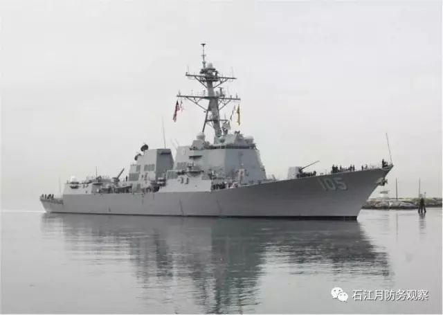
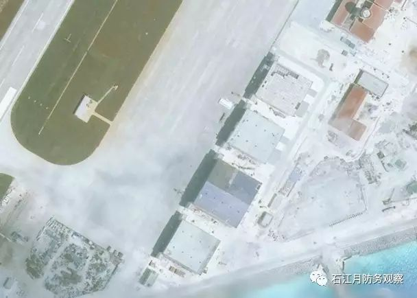
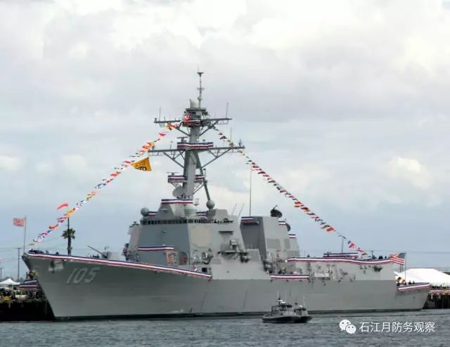

收录于合集
以下文章来源于石江月防务观察 ，作者石江月
石江月防务观察 .
石江月，国内资深军事评论员。发表军事安全和国际防务文章达数百篇，《航空知识》《国际展望》《现代舰船》《坦克装甲车辆》及《环球时报》等国内多家媒体都有刊登和转载。2013年8月，台“防长”杨念祖因抄袭本人译文遭揭发，最终下课。

美军舰闯我美济礁12海里，为什么选在这个时候？

“杜威”号
据美国媒体报道，美国海军一艘驱逐舰24日驶入南海，进入中国岛礁12海里范围，执行“自由航行任务”，是特朗普就任美国总统后的首次。美国上一次展开此类活动还是在奥巴马执政后期的2016年10月份。
为何选择在这时？因为接下来的10天里，美国人又在酝酿为即将举行的香格里拉对话会掀起一轮“南海风暴”。
又闯12海里
美媒引述军方官员的消息指出，美国海军派出“杜威”号（USS Dewey）宙斯盾导弹驱逐舰，驶入中国在南海控制的美济礁12海里范围。尤其令人愤怒的是，美媒称此举是挑战中方在南海宣称拥有的主权。

美济礁飞机跑道
美济礁位于南沙群岛中东部海域，与位于西侧的赤瓜礁距离140公里左右，距离永暑礁295公里左右。是中国南沙群岛的一个环形珊瑚礁。如今经过建设后，这里已经拥有一条飞机跑道，可起降大型军用飞机。
当天，美国国防部发言人戴维斯拒绝评论报道。他只是表示，美军每天都会在亚太地区执行任务，包括南海地区。他还宣称，“美国海军依据国际法执行任务和巡航，并未针对任何国家”。

英国路透社的消息称，美军此举旨在向中国发出信号，即美国意图保持太平洋的重要海上通道畅通。
在南海问题上，特朗普向中国政府发出了前后不一的信号？美国媒体称，特朗普的竞选团队曾将中国对南中国海争议地区提出主权主张归咎于奥巴马政府，指责“奥巴马政府任由中国在争议地区建设跑道、飞机库和港口等军用设施”。但特朗普上台后，在遏制朝鲜核武计划方面向中国寻求帮助。
美国太平洋司令部司令、海军上将哈里斯曾在4月26日向众议院一委员会表示，他认为美国将很快展开自由航行行动。哈里斯公开支持美国进行更多的自由航行。
不过，据美国官员称，特朗普上台后寻求发展对华关系，在这种情况下，美国海军有至多三次进行自由航行的请求被驳回。此事最早是由《纽约时报》披露的。
本月早些时候，哈里斯参观了中日争议地区东中国海(East China Sea，中国称东海)一座岛屿上的日本雷达站，显示哈里斯有意在此类领土争端问题上向中国施压。官员们称，在这次鲜有人知的参观中，哈里斯与日本自卫队统合幕僚长河野克俊造访了与那国岛海岸观测站。
美国一些人认为，美国应对此公开谈论，向其盟友及中国表明意图。一些人则反对此观点。不过，还有一些美国官员认为，若美国开始将巡航变成例行任务，那么公众和媒体的兴趣就会减弱。
上一次美国在南中国海进行此类巡航是在去年10月21日。在那之前美国还在2015年10月份、2016年1月份和2016年5月份在南海执行过“自由航行任务”。
军方有怨气？
从当前看，特朗普政府没有理由惹怒中国，同时也要缓解他在国内面临的巨大压力。在朝鲜半岛问题上，美国仍旧希望寻求与中国的合作，通过中国加大制裁，迫使朝鲜放弃核导开发，走上谈判桌。在国内，美国军方给特朗普压力比较大，必须有所平衡。
而且，特朗普还承受着“通俄门”和“泄密门”的压力，军情部门的力量和保守派的力量非常关键，特朗普在这个时候不能得罪他们，必须缓解跟他们的关系。
此外，现在特朗普已经退出TPP，如果再取消南海巡航，美国肯定有人抱怨，特朗普在全方位退出亚洲，把这个空间让给中国。所以，后者选择在这个时候妥协。
何以看出美国军方在南海问题上对特朗普政府的不满？因为自特朗普上任以来已多次拒绝军方提出的南海巡航要求，“暂时不挑战中国的南海”这种对华态度惊人转变，正是为了专注处理特朗普认为最为迫切与棘手的朝鲜核导问题。
引人注目的是，《纽约时报》在5月初报道说，3月中下旬，美军太平洋司令部向国防部提出请求，希望准许美国军舰通过黄岩岛周边12海里范围内。中国与菲律宾均声称拥有该岛，而中国已在岛上建立起大量的军事建设，包括填海造陆、建飞机跑道、码头与军火库。
根据内部人士透露，美国海军有充分的理由认为该请求会获得批准。他们认为，去年总统大选期间，特朗普批评奥巴马总统捍卫南海国际水域航行自由上过于软弱。美国新任国务卿提勒森在提名听证会上还呼吁，要阻止中国登陆这些有争议性的岛屿及实施扩建。
但是美军太平洋司令部的请求却都遭拒绝，有些甚至根本未出现在川普的办公桌上。这让美国海军一些人士非常惊讶。所以，《纽约时报》能获得这一消息，也显示出美国军方人士的不满，然后将这一内部消息“捅出去”。
为了避免在公开层面上形成军方与总统之间的矛盾，在美军太平洋司令部提出的请求遭到拒绝后，有一种说法开始遮掩——不清楚是国防部长马蒂斯还是参谋联席会议主席邓福德上将予以搁置，也可能是他们的某个副手所为，但国防部官员称白宫并未参与此事。
另外，美军在这个时候选择派军舰闯入美济礁12海里，还有一个重大考虑，就是即将举行的香格里拉对话会。几乎在过去几届香格里拉对话会上，南海问题都会成为美国和相关国家炒作的热点。
这一次也不例外。
根据主办方国际战略研究院（IISS）透露，2017年的香格里拉对话会将在6月2日至4日举行，围绕美国与亚太地区安全、本着各规定维持地区秩序、亚太危机管理新挑战、地缘政治与国防政策改变、建设地区安全的共同基础和全球与地区安全威胁等议题展开讨论。
在距离香会召开只有一周多的时间，美军派军舰闯入美济礁12海里，无疑会令南海问题再次发酵，显示美国在南海问题上“一直存在”的决心。这既是给美国国内保守派看，也是给中国看，更是给东南亚国家看。
用军费“封口”
为了缓解自己的压力，进一步把军队力量拉拢到自己这边，特朗普政府抛出的巨额军费预算也是一个“封口费”。
五角大楼官员召开新财年国防预算新闻发布会
就在美军舰闯入美济礁12海里的前一天，特朗普政府正式推出新财年政府预算报告，提出将基本国防预算提升10%。由于“蛋糕”只有那么大，特朗普选择削减政府对穷人的公共开支来增加军费，使得国会民主党人都对这一预算提案提出批评。
这份2018财年年度基本国防预算，从本年度的5220亿美元提升到5740亿美元，年度增幅达10年来新高。加上主要用于反恐的海外应急行动经费650亿美元，特朗普政府提出将新财年的军费总额增加至6390亿美元，达到自2013财年以来的最高点。
依照这份国防预算，美军计划在下一个财年中添置的尖端武器装备包括70架F-35战机，7架P-8A型反潜侦察机和2艘“弗吉尼亚”级核潜艇。其它优先项目还包括：核打击力量的维护、网络作战和防御能力的提高以及定向能和超高音速武器的研制。军方官员们多次表示，美军会将最先进、能力最强的武器装备优先部署到亚太地区，应对那里越来越大的安全挑战。
国会众议院民主党领袖佩洛西说，将数十亿美元扔给国防、同时抛弃美国普通工薪家庭的做法只会掏空美国的经济。为了提升国防预算，同时谋求平衡联邦政府预算，特朗普政府提出未来十年削减医疗保险和食品补助计划开支，削减社会福利和制定其他紧缩措施。
肯塔基州共和党议员罗杰斯表示，对于一些联邦支出计划的削减并非小打小闹，而是大幅压缩，将给他所代表的肯塔基州阿巴拉契亚地区以及美国其他乡村、贫困地区带来危害。
但对于美国海军而言，这无疑是好消息。这份最新的国防预算计划增加6艘军舰，包括一艘航空母舰。预算还计划将美国军人编制扩充56000多人。军方人士认为，这些新的计划十分关键，而且早该进行了。
美国军方一些人现在处处“哭穷”，声称“国家用破旧的装备回报军队的奉献，让军人士气低落，人才流失”。仅美国空军现在就短缺1500名飞行员。美国空军机动司令部司令埃弗哈特上将说，飞行员的短缺很快会更加严重。
除了增加飞行员并增添战机之外，这项预算还让美国空军购置15架新型空中加油机，为执行空袭任务的战机、以及在全球范围内搜集情报的侦察机补充燃料。
如今，特朗普的政府预算现已送交国会审议，美国国会将拿出最后的意见和决定。
（石江月原创）

来源：石江月防务观察
筛选：早安老师
编辑：晞哲
您可能还会喜欢：
期刊分享 | 国际关系相关专业所有核心期刊免费获取（最新pdf版）
** 深度防务分析看西方如何评论中国武力**
▼
石江月防务观察 **
**
Defence_SJY
|
**
▲长按二维码“识别”关注
**
—|—
由资深军事撰稿人为您带来最新的中国军情，剖析周边军力，洞察防务动态！